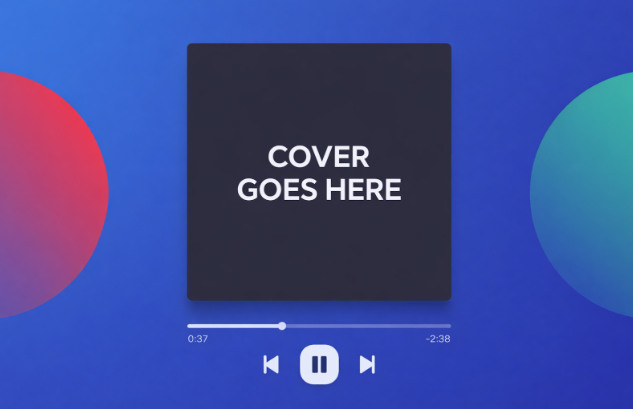

Discovering new music shouldn't feel like homework. We've all been there: scrolling endlessly through Spotify playlists, skipping through algorithmic suggestions that miss the mark, or just replaying the same songs because finding something fresh feels like too much effort. That's why I'm building Vynel, a music discovery app that makes finding your next favorite song as simple as a swipe.
What is Vynel?
Think Tinder, but for music. Vynel connects directly to your Spotify account and presents you with songs one at a time. Swipe right if you like it and the song gets added to your personalized "Vynel Discoveries" playlist. Swipe left to skip it. The more you swipe, the smarter the app gets at understanding your taste.
The core idea is simple: instead of overwhelming you with choices, Vynel gives you one song at a time with a 30-second preview. No analysis paralysis, no endless scrolling. Just pure, focused discovery.
The Problem with Music Discovery Today
Spotify's algorithm is good, but it's also way too safe. It tends to show you variations of what you already know, creating a kind of musical echo chamber. Meanwhile, manually exploring new genres or artists takes time and effort most people don't want to invest.
Vynel solves this by:
- Making discovery frictionless with one swipe at a time
- Learning from your actual preferences, not just what you've already saved
- Automatically building playlists so you don't have to manage them yourself
- Letting you explore specific genres or moods when you want to branch out
Core Features
The MVP will focus on getting the fundamentals right:
- Spotify Integration: Seamless OAuth login and playlist management
- Swipe Interface: Intuitive gesture-based discovery with 30-second song previews
- Smart Recommendations: Algorithm that learns from your swipe history and existing playlists
- Automatic Playlist Creation: Songs you like go straight into a curated Vynel playlist
- Genre Exploration: Toggle between discovery modes to explore specific styles or moods
The Tech Stack
This is a full-stack project that touches multiple technologies:
- Frontend: React/Next.js with TailwindCSS for styling and Framer Motion for smooth swipe animations
- Backend: Node.js/Express for handling Spotify API calls and user data
- Database: PostgreSQL or MongoDB to store user preferences and swipe history
- APIs: Spotify Web API for authentication, recommendations, and playlist management; Spotify Web Playback SDK for audio previews
What's Next
Right now, Vynel is in the planning and design phase. The first milestone is getting a working MVP with core swipe functionality and Spotify integration. From there, I'll be adding features like genre filtering, advanced stats, and algorithm improvements based on real user feedback.
This project is as much about learning full-stack development as it is about building something useful. I'm excited to dive into OAuth flows, work with the Spotify API at scale, and design a recommendation algorithm that actually improves over time.
This page is subject to change as development progresses, but this is the general idea so far.
Stay Tuned
I'll be documenting the development process here on the blog. Expect deep dives into Spotify API integration, building recommendation algorithms, and creating smooth mobile-first UI experiences. If you're interested in music discovery or full-stack development, follow along. There's a lot more to come.
The best way to find new music is to stop looking and start swiping.